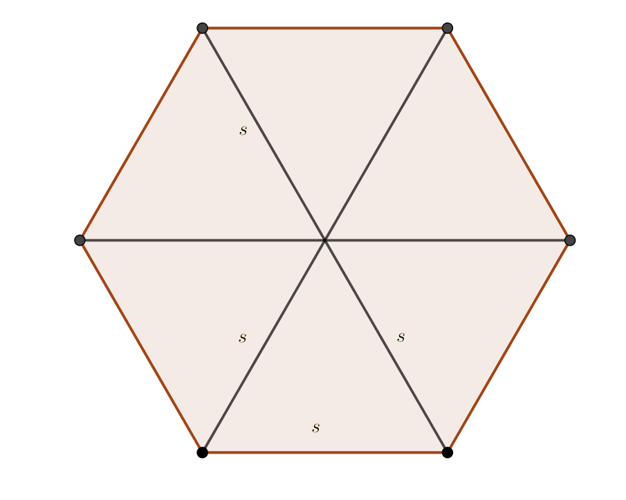

15. Prismat
Som prisma ser man vilken tredimensionell geometrisk figur som har parallella sidor. Bottenytan kan vara formad som tex en cirkel, triangel eller femhörning.
Volymen för vilken prisma som helst är \( V=A_b \cdot h \).
Mantelytan beror på formen av prismat.
Exempel 1 Ett prisma har volymen 15 cm3 och höjden 5 cm. Bestäm bottenarean.
Lösning
\( \begin{array}{l} V=A_b \cdot h\\ A_b = \dfrac{V}{h} = \dfrac{15}{5}= 3 \text{ cm}^2 \\ \end{array} \)
Exempel 2 En cylinder har volymen 1,0 dm3. Bestäm höjden och diametern för cylindern då cylindern är dubbelt så hög som bred.
Lösning
För höjden gäller att:
\( \begin{array}{rcl} h & = & 2d = 4r \\ V & = & \pi r^2 \cdot h \\ & = & \pi r^2 \cdot 4r \\ & = & 4\pi r^3.\\ r^3 & = & \dfrac{V}{4\pi} \\ r & = & \sqrt[3]{\dfrac{V}{4\pi}} = \sqrt[3]{\dfrac{1}{4\pi}} = 0,43 \textrm{ dm}\\ \end{array} \)
Höjden är 17,2 cm och diametern 8,6 cm.
Regelbundna prisman är prisman vars bottenarea är regelbundna polygoner.
Exempel 3 Ett prismas bottenyta består av en regelbunden sexhörning. Bestäm diagonalen för bottenarean då volymen för prismat är 15 cm3 och höjden är 5 cm.
Lösning
Eftersom \( V = A_b \cdot h \) får vi att \( A_b = \dfrac{V}{h} = \dfrac{15 \text{ cm}^3}{5 \text{ cm}} = 3 \text{ cm}^2\).
En regelbunden 6-hörning består av 6 st liksidiga trianglar. Diagonalen för prismats bottenarea är längden av två sidor.

Vi löser problemet genom att undersöka en triangel. Man kan även lösa den genom att titta på alla 6 trianglar på en gång.
Arean för en triangel är \( \dfrac{3 \text{ cm}^2}{6} = 0,5 \text{ cm}^2 \). Vi kan bestämma arean för en triangel med \( A = \dfrac{1}{2}ab \sin \alpha \), där \( a \) och \( b \) är längden av två sidor och \( \alpha \) är vinkeln emellan.
Med detta kommer vi vidare. I en liksidig triangel är alla vinklar lika stora, 60o, och alla sidor lika långa.
Vi får längden av en sida, \( 0,5 = \dfrac{1}{2}s^2\cdot \sin 60^{\circ} \). Vi får att \( s = 1,0745\ldots \) cm.
Alltså är diagonalen för bottenarean 2,15 cm, eller 2,2 cm.
Uppgifter
Bestäm volymen av figuren.

\( V=A \cdot h = 8 \cdot 6 = 48 \) cm3.
- Hur många liter rymmer en takränna, som sett från sidan ser ut som en halvcirkel, vars diameter är 9,5 cm och längden är 10 m.
Eftersom 1 liter är 1 dm3 kan det löna sig att ändra längderna till dm.
\( V=A_b \cdot h = \dfrac{1}{2}\cdot \pi \cdot 0,475^2 \cdot 100 = 35,44 \) dm3.
Alltså 35 liter.
- Bestäm längden av den längsta pinne som ryms i en rak cylinder vars radie är 3,0 cm och höjd 24,0 cm. Svara med en tiondels cm noggrannhet. Bestäm dessutom storleken på vinkeln med en tiondel grads noggrannhet som pinnen bildar med bottenytan.
Vi får pinnens längd, \( l \), som \( l=\sqrt{24^2+(3+3)^2} = 6\sqrt{17} \approx 24,7386\ldots \) cm.
Vi får \( \tan \alpha =\dfrac{24}{6} \) som ger \( 75,963\ldots \).
Alltså 76,0o.
- En cylinder omskriver ett rätblock vars bottenarea är en kvadrat. Hur många procent utgör rätblockets volym av cylinderns volym?
Vi betecknar sidan i kvadraten med \( a \) och radien med \( r \). Sambandet mellan sidan och radien är \( a=r\sqrt{2} \).
Båda kropparna är lika höga och vi betecknar höjden med \( h \).
Förhållandet mellan volymerna är \( \dfrac{V_{\text{rätblock}}}{V_{\text{cylinder}}} = \dfrac{a^2 \cdot h}{\pi r^2 \cdot h} = \dfrac{(r\sqrt{2})^2 \cdot h}{\pi r^2 \cdot h}= \dfrac{2}{\pi} = 0,63661\ldots \).
Alltså 63,7 %.
- Bestäm den totala arean för en konservburk vars volym är 2 dl och vars radie och höjd har samma värde.
Volymen är 2 dl som är 0,2 dm3.
Via volymen får vi att \( V=A_b h = \pi r^2 \cdot r = 0,2 \), och att \( r=\sqrt[3]{\dfrac{0,2}{\pi}} \approx 0,39929\ldots \) dm.
Den totala arean är \( A=2A_b + A_m = 2\pi r^2 +2\pi r \cdot r = 4\pi r^2 = 2\pi (\sqrt[3]{\dfrac{0,2}{\pi}})^2 = 2,0035 \) dm2.
- Ett prismas bottenyta är en liksidig triangel vars höjd är 5,0 cm. Bestäm volymen av prismat då höjden för prismat är 7,0 cm.
Sidan i bottenytan har längden \( a=\dfrac{2h}{\sqrt{3}} = \dfrac{10}{\sqrt{3}} \) cm.
Volymen för prismat är \( V=A_b \cdot h = \dfrac{1}{2} \cdot \dfrac{10}{\sqrt{3}} \cdot 5 \cdot 7 = 101,04 \) cm3.